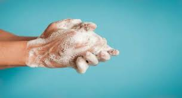
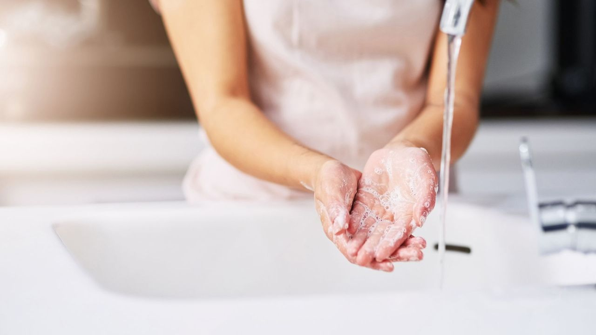
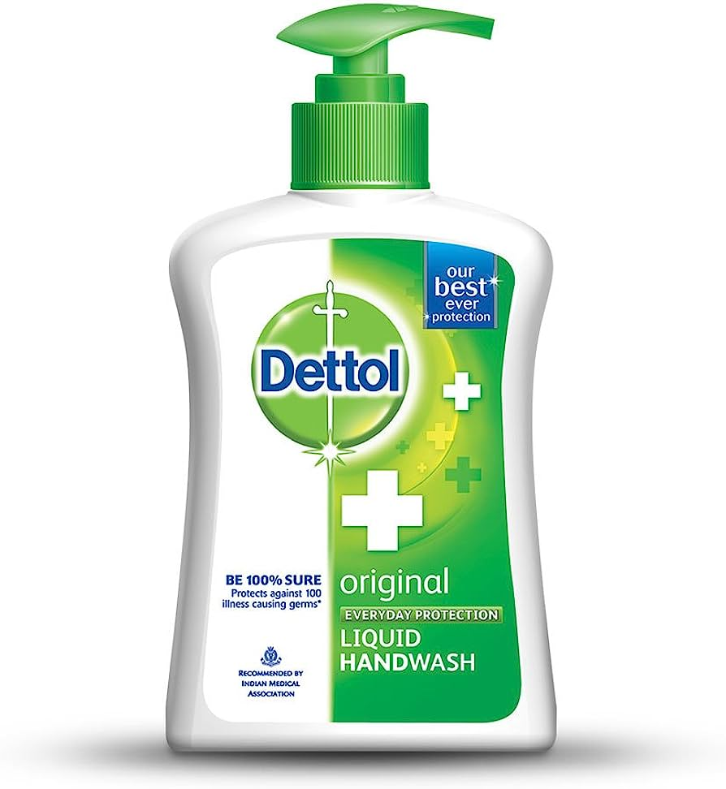
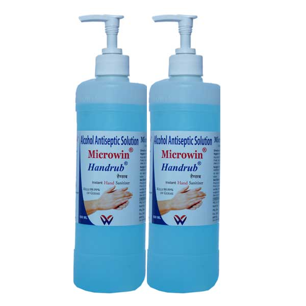

Washing hands can keep you healthy and prevent the spread of respiratory and diarrheal infections. Germs can spread from person to person or from surfaces to people when you: Touch your eyes, nose, and mouth with unwashed hands.When you wash your hands, you protect yourself from germs. You also protect people in your family. And with the coronavirus, when you stop the spread of germs at home, you protect people in the community too.
Wet your hands with clean, running water (warm or cold), turn off the tap, and apply soap. Lather your hands by rubbing them together with the soap. Lather the backs of your hands, between your fingers, and under your nails. Scrub your hands for at least 20 seconds.
This procedure is used to destroy microorganisms on the surface of the skin. It also reduces resident bacteria or viruses that typically live on the surface.An antimicrobial substance that inactivates microorganisms or inhibits their growth on living tissues. Examples include alcohols, chlorhexidine gluconate (CHG), chlorine derivatives, iodine, chloroxylenol (PCMX), quaternary ammonium compounds, and triclosan.
Antiseptic handrub is defined as applying a waterless antiseptic agent to the hands. The FDA classifies ethanol, 60 to 95% formulations, as a Category I agent.12 The antiseptic activity of ethanol is attributed to its ability to denature proteins.17 Ethanol, 60-95% is more effective than higher concentrations because proteins are not denatured easily in the absence of water.Antiseptic handrub removes or destroys transient microorganisms and reduces the resident flora.The CDC and the WHO have concluded that an antiseptic handrub is more effective than handwashing or an antiseptic handwash and is recommended for routine hand hygiene in clinical situations when the hands are not visibly soiled. As noted earlier, the concurrent use of an alcohol-based handrub and an iodophor-based antimicrobial soap is contraindicated.
Medical professionals routinely carry out surgical hand antisepsis before undertaking invasive procedures to destroy transient micro‐organisms and inhibit the growth of resident micro‐organisms. Antisepsis may reduce the risk of surgical site infections (SSIs) in patients.To determine the effects of surgical hand antisepsis on the number of surgical site infections (SSIs) in patients. The secondary objective is to determine the effects of surgical hand antisepsis on the numbers of colony forming units (CFUs) of bacteria on the hands of the surgical team.
According to World Health Organization(WHO) there are five moments of hands hygiene:
The following materails or equipment are needed to perform hand washing:
email:handshygiene@gmail.com
promoting proper hand hygiene is a crucial component of any community service project aimed at improving public health. Through our project, we have highlighted the importance of regular handwashing with soap and water, or the use of hand sanitizers when water is unavailable.our hands hygiene community service project has been successful in promoting the importance of proper hand hygiene, equipping community members with the knowledge and tools to protect themselves and others from infectious diseases.